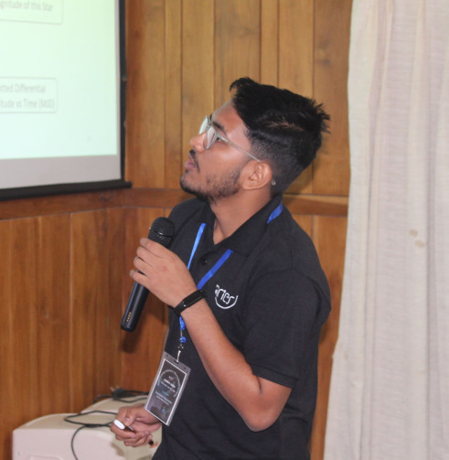

PhD student, Astronomical Observatory, University of Warsaw

নমস্কার! I am a PhD student in Warsaw, working with Łukasz Wyrzykowski and Mariusz Gromadzki. I work on extragalactic transients, mostly from the optical side but with X-ray and γ-ray data wherever I can get them. I also help build BHTOM.
I grew up in Thakurpura, a small village in South Dinajpur, West Bengal. After school at Barakoil and Balurghat High School I did a B.Sc. in physics at Malda College (University of Gour Banga, 2022) and an M.Sc. at Banaras Hindu University (2024). I then worked as a research assistant with Raj Prince in the High Energy Astrophysics Lab at BHU, which is where I started on blazars.
Outside work I read Bengali novels, take photographs and play chess and badminton. The best biriyani is from Kolkata.
Nuclear transients. Most of my time now goes into flares from the centres of galaxies: tidal disruption events, changing-look AGN and Bowen fluorescence flares. AT 2020xys, a Bowen fluorescence flare, is one of my current objects.
BHTOM. BHTOM collects and calibrates photometry from a large network of professional and amateur telescopes, and much of my follow-up runs through it. I work on BHTOM3, the new version built on the TOM Toolkit, mainly its data services, photometry and spectroscopy.
Interacting supernovae. I also work on Type IIn supernovae, where the ejecta run into gas the star lost before it exploded. SN 2019qem has been interacting like this for three years.
AGN and blazars. Before Warsaw I studied flares in the blazars BL Lacertae, Ton 599, 4C +27.50 and OP 313, and contributed to a study of jets in narrow-line Seyfert 1 galaxies. I also have one paper on how solar flares disturb the ionosphere.
I am a member of LSST-TVS, PESSTO and RISOTTO.
The complete list is in my ADS library.
All are BHTOM.space photometric follow-up; first author is me unless noted.
| Nov 2026 | BHTOM: Standardized, automated time-domain follow-up from a global volunteer telescope network ACME Workshop: The Transient Universe in the Rubin Era, Orsay |
| Sep 2026 | AT 2020xys: Discovery, classification and multi-wavelength observations of a Bowen fluorescence flare in an AGN HERA 2026, Warsaw |
| Sep 2026 | SN 2019qem: A luminous Type IIn supernova seen through three years of interaction ePESSTO+ meeting, Cardiff |
| Sep 2026 | SN 2019qem: A long-lived, luminous Type IIn supernova with sustained circumstellar interaction 17th Gaia Science Alerts and ACME workshop, Fréjus |
| Sep 2026 | New features in BHTOM3 - data services, photometry, spectroscopy 17th Gaia Science Alerts and ACME workshop, Fréjus |
| Aug 2026 | BHTOM: A platform for coordinated time-domain studies of accreting supermassive black holes (poster) TDEs and Nuclear Transients in Crete vol. 2, Heraklion |
| Mar 2026 | BHTOM: Standardized, automated time-domain follow-up from a global volunteer telescope network RAPID Response, Caltech |
| Jun 2025 | Investigating the X-ray spectral evolution in Circinus X-1 using XSPECT/XPoSat XSPECT workshop, URSC, ISRO, Bengaluru |
| Jan 2025 | Multi-wavelength study of a transitioning blazar OP 313 7th Regional Science and Technology Congress, Malda |
| May 2024 | Photometric study of an open cluster Berkeley 65 ARIES Training School in Observational Astronomy, Nainital |
| Jun 2022 | Quantum biology Students’ Seminar, Malda College |
Rubin-LSST Polish Consortium meeting, Wrocław (2026) · EDUCADO-MWGaiaDN school on astro-AI and ML, Ghent (2026) · ILMT-2025 workshop, Nainital (2025) · High Energy Astrophysics Workshop, Varanasi, local organiser (2024) · IIA Summer School (2023) · START, Varanasi (2023) · IUCAA summer school, Pune (2022) · International Summer Program, University of Osaka (2021) · ISRO workshop on space technology (2021) · SciPy India (2020) · Kaliyaganj College astrophysics webinar (2020)
At the Observatory I teach Advances in Modern Astronomy I and II this winter semester (2026). I taught part I for the first time in summer 2026.
Telescope time awarded so far:
| Telescope | hours |
|---|---|
| Kottamia Astronomical Observatory, Egypt | 35 |
| Baldone Schmidt Telescope, Latvia | 30 |
| University of Zielona Góra Observatory, Chile | 30 |
| Joan Oró Telescope, Spain | 10 |
| Liverpool Telescope, La Palma | 8.5 |
| Las Cumbres Observatory 0.4 m | 6 |
Swift ToOs (RIP Swift): PKS 2208−137, Gaia DR3 277817015341, OQ 334, AT 2024agoe, AT 2025acft, SDSS J080622.15+21262, AT 2026gz, GB6 J0742+5444 and AT 2026ava.
Astronomical Observatory, University of Warsaw
Al. Ujazdowskie 4, 00-478 Warszawa, Poland
j.majumdar@uw.edu.pl, jmajumdar@astrouw.edu.pl or joysankarmajumdar@gmail.com
Also on ResearchGate, LinkedIn and Instagram.